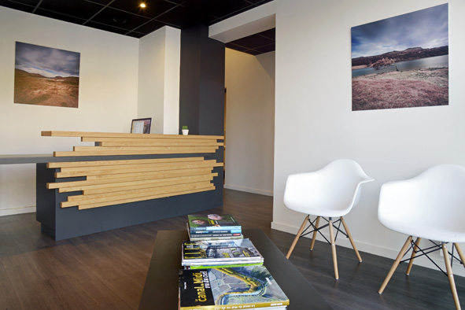
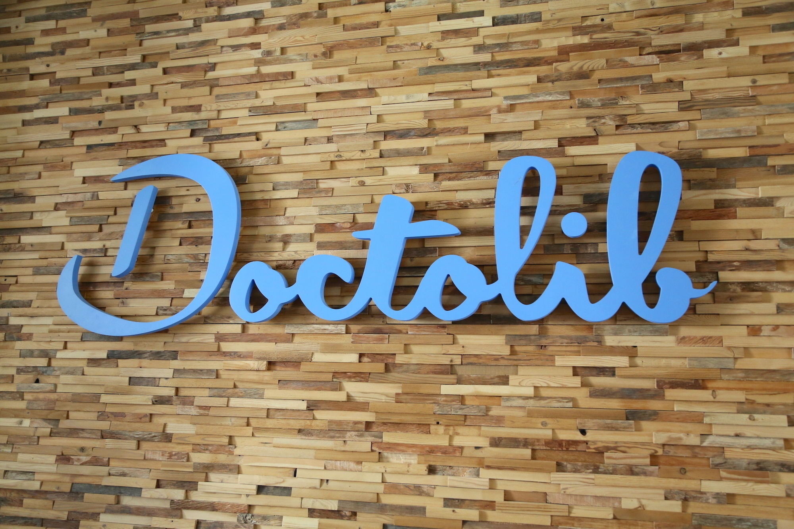

14, rue Nulle Part
59000 Lille
Telephone
07.14.10.20.10
Adresse E-Mail
contact-emc@pro.com
Présentation d'Eco Medical Center :
L'Eco Medical Center est constitué d'une petite équipe et propose une offre de soins pluridisciplinaire complète.
Le cabinet médical se situe au 14, rue Nulle Part 59000 Lille.
Un panneau récapitulatif vous indique à quel étage se trouve le praticien recherché (cadre blanc à l'entrée du batiment).
Le cabinet est également accessible aux personnes à mobilité réduite.

Eco Medical Center
Bon à savoir
Vous pouvez prendre vos rendez-vous directement sur internet 24H/24 en vous connectant sur:
